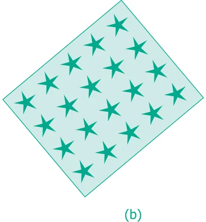
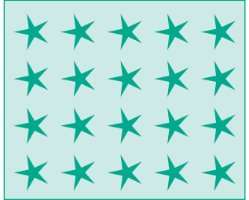
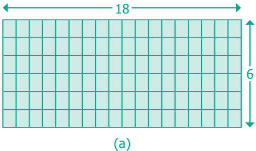
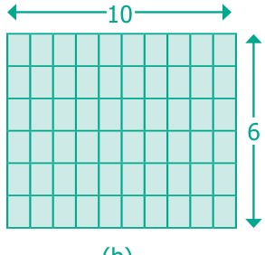
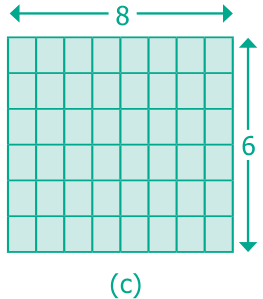
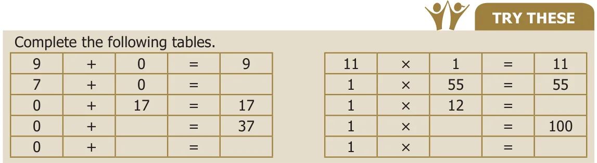
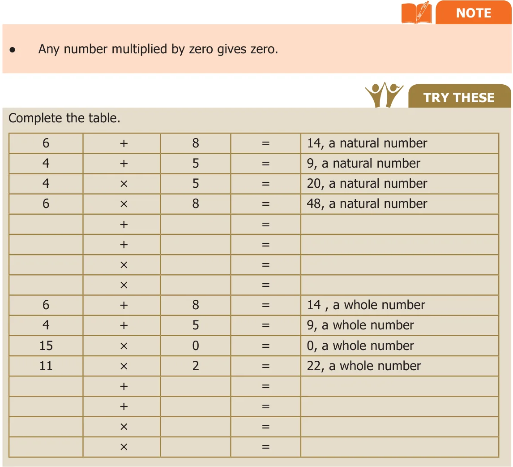

The properties of numbers are important facts to be remembered,which helps to do arithmetic calculations more precisely and to avoid mistakes.
1.10.1 Commutativity of addition and multiplication
When two numbers are added (or multiplied), the order of the numbers does not affect the sum (or the product). This is called commutativity of addition (or multiplication). Observe the given facts:
- (i)\(43 + 57 = 57 + 43\)
- (ii)\(12 \times 15 = 15 \times 12\)
- (iii)\(35,784 + 48,12,69,841 = 48,12,69,841 + 35,784\)
- (iv)\(39,458 \times 84,321 = 84,321 \times 39,458\)
Such facts are called as equations. In each of the above equations, the answers on both the sides are same. Finding the answer for the third and fourth equations takes more time. But, these equations are meant to convey the properties of numbers. The third equation is correct by commutativity of addition and the fourth equation is correct by commutativity of multiplication.
Pictorial representation of understanding commutativity of multiplication. If we have 5 rows of stars, each with 4 stars, we can draw the total of 20 stars as a rectangle \((5 \times 4 = 20)\). See Fig.1.2 below. Now rotate the rectangle given in Fig.1.2 (a) to get the Fig.1.2(c) as given below. It is the same rectangle. It has exactly the same total number of stars, 20. But now, we have 4 rows of stars, each with 5 stars! That is, \(5 \times 4 = 4 \times 5\).


- (a)(c)
Now, look at the following example.
\(7 - 3 = 4\) but \(3 - 7\) will not give the same answer. Similarly, the answers of \(12 \div 6\)
and \(6 \div 12\) are not equal.
That is, \(7 - 3 \ne 3 - 7\) and \(12 \div 6 \ne 6 \div 12\)
Hence, In whole numbers subtraction and division are not commutative.
TRY THESE
- ●Use atleast three different pairs of whole numbers to verify that subtraction is not
commutative.
- ●Is \(10 \div 5\), the same as \(5 \div 10\)? Justify it by taking two more combinations
of numbers.
1.10.2 Associativity of addition and multiplication
When several numbers are added, the order in which the numbers are added does not matter. This is called associativity of addition. Similarly, when several numbers are to be multiplied, the order in which the numbers are multiplied does not matter. This is called associativity of multiplication.
It can be said that the following equations are correct, without actually doing any addition or multiplication, but by using the property of associativity. A few examples are given below:
\((43 + 57) + 25 = 43 + (57 + 25) 12 \times (15 \times 7) = (12 \times 15) \times 7\)
\(35,784 + (48,12,69,841 + 3) = (35,784 + 48,12,69,841) + 3\)
\((39,458 \times 84,321) \times 17 = 39,458 \times (84,321 \times 17)\)
It is to be noted that here too, subtraction and division are not associative.
1.10.3 Distributivity of multiplication over addition or subtraction
An interesting fact relating to addition and multiplication comes from the following patterns:
\((72 \times 13) + (28 \times 13) = (72 + 28) \times 13\)
\(37 \times 102 = (37 \times 100) + (37 \times 2) 37 \times 98 = (37 \times 100) - (37 \times 2)\)
From the last two cases, we arrive at the following equations:
\(37 \times (100 + 2) = (37 \times 100) + (37 \times 2) 37 \times (100 - 2) = (37 \times 100) - (37 \times 2)\)
It can be noted that the product of a number and sum of numbers can be written as the sum of two products. Similarly, the product of a number and a number got by subtraction can be written as the difference of two products. This property is called the property of distributivity of multiplication over addition or subtraction. It is a very useful property to group numbers in a convenient way. Now, let us say \(18 \times 6 = (10 + 8) \times 6\) in an easy way as shown in Fig.1.3.



\(= +\)
Thus, \(18 \times 6 = (10 + 8) \times 6\) is shown clearly in the above figure. It is to be noted that addition does not distribute over multiplication. For example, \(10 + (10 \times 5) = 60\) and \((10 + 10) \times (10 + 5) = 300\) are not equal.
1.10.4 Identity for addition and multiplication
When zero is added to any number, we get the same number. Similarly, when we multiply any number by 1, we get the same number. So, zero is called the additive identity and one is called the multiplicative identity for whole numbers.

Finally, these are some simple observations that are important.
- ●When we add any two natural numbers, we get a natural number. Similarly when we
multiply any two natural numbers, we get a natural number.
- ●When we add any two whole numbers, we get a whole number. Similarly when we
multiply any two whole numbers, we get a whole number.
- ●When we add a natural number to a whole number, we get a natural number. When
we multiply a natural number by a whole number, we get a whole number.

All such properties together play a vital role in the Number System. When we learn Algebra, we can realise the usefulness of these properties of the Number System and we can find ways of extending it too.
How will you read the large number given below? 731,687,303,715,884,105,727 This is read as 731 quintillion, 687 quadrillion, 303 trillion, 715 billion, 884 million, 105 thousand, 727 ones.